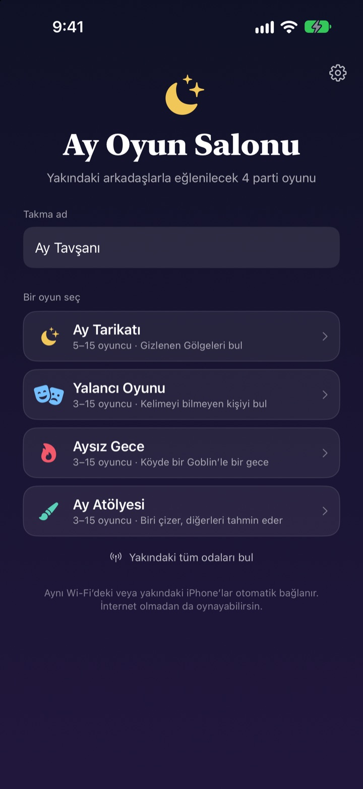
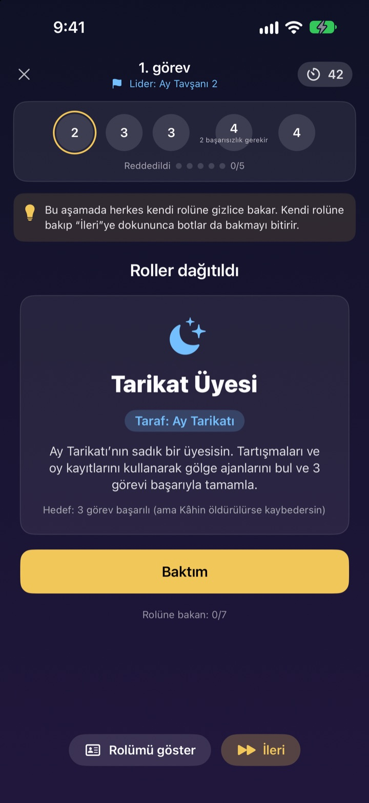
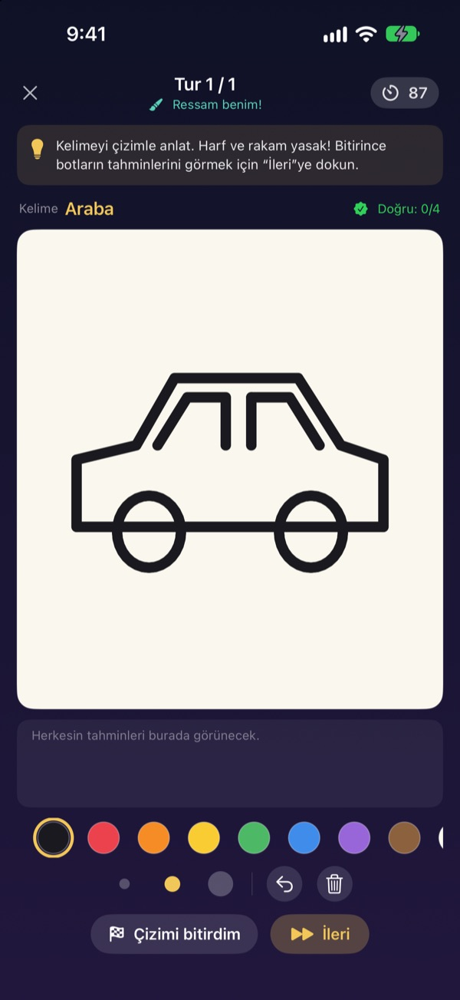
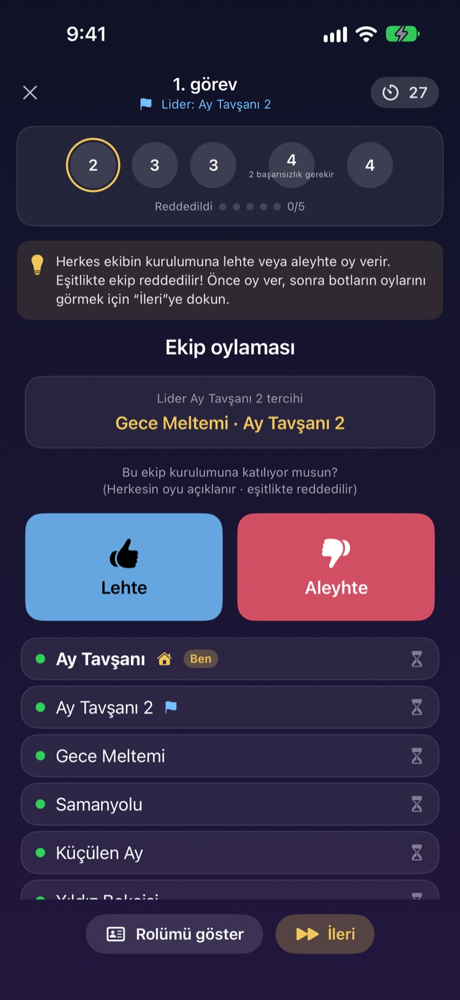

Herkes geldi mi?
iPhone’lar ortaya.
Biri oda kurar, yakındaki herkes saniyeler içinde katılır. Roller ve gizli kelimeler yalnızca herkesin kendi ekranında görünür: kart yok, oyunu yönetmek için dışarıda kalan kimse yok.
Tüm oyunlar ücretsiz. Hesap ve internet gerekmez.

Bir el Yalancı Oyunu oyna
Masada beş iPhone olduğunu düşün ve tek tek dokunarak bak. Kelimeyi yalnızca bir kişi bilmiyor. Arkadaşlarınla ekranı elden ele dolaştırarak da oynayabilirsin.
Herkes toplandı ama ne oynanacağı belli değil
Oyun gecesi, yazlıkta hafta sonu, bayramda aile toplantısı. Vampir Köylü oynamak için birinin oyundan çıkıp yönetmesi gerekir, katlanmış kâğıtlar da hiç tam gizli kalmaz. Wi-Fi’ı zayıf bir evde online oyunlar da olmaz. Ay Oyun Salonu’nda yönetmeyi, rol dağıtmayı ve bağlantıyı iPhone’lar üstlenir.
Rolün yalnızca senin ekranında
Oyun başlayınca her iPhone kendi rolünü ya da kelimesini alır. Kart dağıtmak ya da “herkes gözlerini kapatsın” demek yok.
Oylamada yalnızca kimin oy verdiği görünür. Kimin kime oy verdiği açıklanana kadar gizli kalır.

Her ortama dört oyun
Yalancı Oyunu’nda laf ustalığı kazanır, Ay Tarikatı’nda görevler ve oylamalarla Gölgeleri avlarsınız, Aysız Gece’de tek gecede Goblin’i bulursunuz, Ay Atölyesi’nde biri çizer, diğerleri tahmin eder.
Ay Tarikatı 5 kişiyle, diğerleri 3 kişiyle başlar; hepsi 15 kişiye kadar oynanır.

Yeni oyun mu? Dakikalar içinde öğrenilir
Her oyunun bir Nasıl oynanır modu var; botlarla adım adım bir el oynarsın. Üstteki ipucunu oku ve İleri’ye dokun.
Uygulama kapanır ya da bağlantı koparsa ana ekrandaki Devam et ile aynı ele dönersin.

Üç adımda başla
- 1
Takma ad ve oyun seç
Herkes uygulamayı açar, takma adını yazar ve oyunu seçer.
- 2
Oda oluştur ya da katıl
Biri oda oluşturur, diğerleri Yakındaki odaları bul ile katılır.
- 3
Ev sahibi başlatır
Herkes içerideyse ev sahibi Oyunu başlat’a dokunur. Gerisini uygulama halleder.
Dört oyun
- Yalancı Oyunu · 3–15 kişi
- Biri hariç herkes aynı kelimeyi alır. Sırayla anlatılır, sonra Yalancı oylanır. Yakalanan Yalancı kelimeyi bilirse yine de kazanır.
- Ay Tarikatı · 5–15 kişi
- Tarikatın içine saklanan Gölgeleri bulun. Lider bir görev ekibi seçer, herkes lehte ya da aleyhte oy verir, ekip de gizlice başarı ya da başarısızlık kartı atar. Üç görevi önce alan taraf kazanır.
- Aysız Gece · 3–15 kişi
- Tek bir gece ve köye saklanmış bir Goblin. Gece Şaman, Gece Hırsızı ve Muzip gizlice harekete geçer. Şafakta tartışılır ve Goblin’i bulmak için tek bir oylama hakkı vardır.
- Ay Atölyesi · 3–15 kişi
- Biri kelimeyi çizer, diğerleri sohbette tahmin eder. Ne kadar hızlı bilirsen o kadar çok puan alırsın; çizen de her doğru tahminden puan kazanır.
Her oyun önce Nasıl oynanır modunda botlarla tek başına denenebilir.
Sık sorulan sorular
Odayı göremiyorum.
Ev sahibiyle oyuncuların aynı Wi-Fi’da ya da birbirine yakın olduğundan emin ol. Yakındaki aygıtları bulmak için Ay Oyun Salonu’nun Ayarlar ▸ Gizlilik ve Güvenlik ▸ Yerel Ağ’da açık olması gerekir. Wi-Fi ve Bluetooth’un ikisi de açıkken bağlantı en kararlı hâlindedir.
Yerel ağ erişimine izin vermek şart mı?
Evet. Uygulama yakındaki iPhone’ları bu sayede bulup bağlanır. Yanlışlıkla İzin Verme’ye dokunduysan Ayarlar ▸ Gizlilik ve Güvenlik ▸ Yerel Ağ’dan yeniden açabilirsin.
Oyunun ortasında bağlantım koptu.
Uygulamayı yeniden aç ve ana ekranda Devam et’e dokun; aynı odaya, aynı ele dönersin. Rolün ve puanın yerinde durur. Uzun süre bağlanamazsan oda listesinden yeniden katıl.
Biri yanıt vermiyor, oyun takıldı.
Ev sahibi yanıt vermeyen oyuncuyu istediği an çıkarabilir; oyun kalanlarla yeniden değerlendirilip devam eder. GM yönetici modunda takılan bir aşama atlanabilir de.
En az kaç kişi gerekir?
Ay Tarikatı için 5 kişi gerekir. Yalancı Oyunu, Aysız Gece ve Ay Atölyesi 3 kişiyle başlar. Hepsi 15 kişiye kadar oynanır. Kişi eksikse kuralları Nasıl oynanır modunda botlarla öğrenin.
İnternet ya da hesap gerekiyor mu?
Hayır. Kayıt, giriş ya da internet yok. Yakındaki iPhone’lar doğrudan bağlanır ve oyun verileri hiçbir zaman sunucuya gönderilmez.
Önce tek başıma deneyebilir miyim?
Evet. Bir oyun seç, sonra Nasıl oynanır (botlarla pratik)’ı seç. Botlar odaya girer ve adım adım tam bir el oynarsın.
Hata bildirmek ya da fikir göndermek için ne yapmalıyım?
Uygulamada Ayarlar (dişli) ▸ Destek’ten doğrudan gönderebilir ya da aşağıdaki adrese e-posta atabilirsin. En kısa sürede yanıt veririz.
Hata, fikir ya da başka bir sorun için mizzking75@gmail.com adresine yaz.